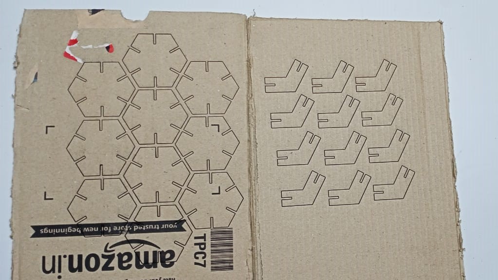

- Aim: To perform or find kerf calculation.
- Task:
- Make a parametric design and note down its dimensions.
- Export the design in .dxf format and upload it on Laser-Cad software.
- Take proper precautions before starting the laser cutter.
- Give command to the laser cutter to cut the design.
- Engrave the design from the cardboard and measure its dimensions.
- Summarize the dimensions before cutting and after cutting.
- Outcome: After cutting, we came to know about the laser cutter's power, speed, accuracy and extent of thickness.


- Task: To make an assembly
- Make a parametric design.
- Note down its dimensions.
- Export it in .dxf or .dwf format.
- Upload it on the Laser-Cad software.
- Make the required changes on the Laser-Cad workspace.
- Copy the objects if you want multiple copies to assemble.
- Lastly, check that the USB port is properly connected with the laser cutter otherwise it will provide a communication error. Click on download and the file will be downloaded to the machine.
- Operate the laser cutter properly by giving relevant instructions.
- Collect the design and engrave it to make the required assembly.

Laser-Cad
- Laser-Cad is a computer software in which we can import our .dxf or .dwf file and give commands to the laser cutter as required. Once our modifications are over, we can download the file and the file will be uploaded to the laser cutter.
- We can change the speed, power, etc. of the laser in order to get our design cut properly. Specific materials have fixed values of speed and power. For example, cardboard 6.9mm (speed=35mm/s and power=70%).

Cutting process by laser cutter
- SIL Laser Engraving - Cutting Machine
- Flow-Chart of the process of starting laser cutter
- Below are some images and videos taken while doing the final assembly.
